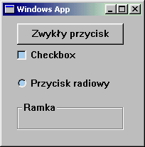
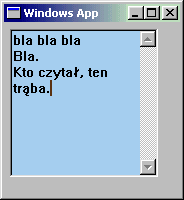
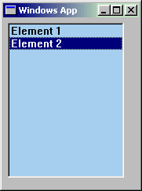
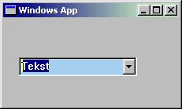
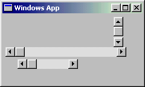

| << Poprzednia czêœæ kursu Strona g³ówna Spis Nastêpna czêœæ kursu >> |
Nasze puste okienko jakoœ blado wygl¹da przy aplikacjach typu Word, albo chocia¿by przy samym Dev-C++. Warto by dorzuciæ te ró¿ne fajne bajery, jak przyciski, menu, pola tekstowe... Te wszystkie rzeczy nazywa siê po angielsku controls, co po naszemu t³umaczy siê (mo¿e niezbyt trafnie, ale ca³kiem funkcjonalnie) jako "kontrolki".
Kontrolki to po prostu takie "ma³e" okienka, które wchodz¹ w sk³ad "du¿ego" okna macierzystego. Tak samo jak "zwyk³e" okna, kontrolki tworzymy wiêc funkcjami CreateWindow oraz CreateWindowEx. Co wrzuciæ do tych funkcji, ¿eby zamiast normalnego okna wyprodukowa³y nam kontrolkê? Przede wszystkim musimy wpisaæ predefiniowan¹ nazwê klasy. Jak byæ mo¿e pamiêtasz, podczas tworzenia g³ównego okna programu mogliœmy tam wpisaæ cokolwiek, np. "MyWindowClass". Tworz¹c przycisk wpisujemy zaœ "BUTTON". Pozosta³e klasy, których mo¿emy u¿yæ, to m.in.: COMBOBOX, EDIT, LISTBOX, SCROLLBAR, STATIC. Ich przeznaczenia zapewne siê domyœlasz, a jeœli nie, to i tak zaraz wszystko omówimy.
Druga rzecz, któr¹ trzeba dorzuciæ do argumentów funkcji tworz¹cej kontrolkê to styl WS_CHILD, który oznacza, ¿e tworzone przez nas okienko (kontrolka) jest oknem potomnym dla g³ównego okna programu. Jeœli ju¿ jesteœmy przy stylach okna, to musisz pamiêtaæ, ¿e ka¿da kontrolka ma swój specyficzny zestaw stylów, wiêc nie wszystkie style odnosz¹ce siê do "zwyk³ego" okna dzia³aj¹ z kontrolkami (i vice versa). Szczegó³y omówimy w rozdzia³ach poœwiêconych konkretnym kontrolkom.
Jak siê rzek³o, nazwa klasy odpowiadaj¹cej za przyciski to BUTTON. Zestaw stylów specyficznych dla tej klasy zaczyna siê przedrostkiem BS_, ale w sumie nie potrzebujemy na razie ¿adnego z nich do szczêœcia. Stwórzmy sobie najprostszy z mo¿liwych przycisków. Najpierw deklaracja globalnego uchwytu (poza funkcj¹ WinMain):
|
HWND g_hPrzycisk; |
...i tworzymy (wewn¹trz WinMain):
|
g_hPrzycisk = CreateWindowEx(0, "BUTTON", "Nasz przycisk", WS_CHILD | WS_VISIBLE, 100, 100, 150, 30, hwnd, NULL, hInstance, NULL); |
Kod z tego przyk³adu nale¿y wkleiæ tu¿ po instrukcji tworz¹cej okienko g³ówne. Jeœli program, do którego ten przyk³adowy fragment wklejasz, u¿ywa innej zmiennej przechowuj¹cej uchwyt gównego okna ni¿ hwnd, to oczywiœcie musisz to w tym fragmencie odpowiednio zmieniæ. To samo tyczy siê uchwytu programu (w moim przyk³adzie hInstance).
Mo¿liwoœci klasy BUTTON s¹ jednak znacznie wiêksze, ni¿ mog³oby siê na pierwszy rzut oka wydawaæ. Oprócz bowiem zwyk³ych przycisków, u¿ywaj¹c tej klasy mo¿emy jeszcze tworzyæ checkboxy, przyciski radiowe (czyli te okr¹g³e, z których tyko jeden w danym momencie mo¿e byæ wciœniêty), a nawet ramki grupuj¹ce ró¿nego rodzaju kontrolki:

Jak to wszystko uzyskaæ? To bardzo proste. Wystarczy do³¹czyæ odpowiedni styl - BS_CHECKBOX dla checkboxa, BS_RADIOBUTTON dla przycisku radiowego, BS_GROUPBOX dla ramki grupuj¹cej. Mo¿esz te¿ poeksperymentowaæ z innymi stylami, których opisy znajdziesz w MSDN. A oto przyk³ad tworzenia przycisku z innym stylem, tak na wszelki wypadek:
|
g_hPrzycisk = CreateWindowEx(0, "BUTTON", "Ckeckbox", WS_CHILD | WS_VISIBLE | BS_CHECKBOX, 100, 100, 150, 30, hwnd, NULL, hInstance, NULL); |
Naciœniêcie naszego przycisku generuje komunikat WM_COMMAND, dziêki czemu mo¿emy przyciskowi przypisaæ jak¹œ akcjê, np. wyœwietlenie wiadomoœci. Wystarczy dodaæ obs³ugê komunikatu WM_COMMAND:
|
case WM_COMMAND: MessageBox(hwnd, "Nacisn¹³eœ przycisk!", "Ha!", MB_ICONINFORMATION); break; |
Tak siê jednak sk³ada, ¿e komunikat WM_COMMAND mo¿e zostaæ wygenerowany przez bardzo wiele ró¿nych kontrolek, np. przez menu albo toolbar, w dodatku jeœli mamy w naszej aplikacji kilka przycisków, to ka¿dy z nich oczywiœcie bêdzie generowa³ WM_COMMAND. Jak wiêc sprawdziæ, czy pochodzi on w³aœnie od przycisku, i to tego przycisku, który nas interesuje? Otó¿ musimy przyjrzeæ siê uwa¿niej argumentom naszej procedury okna. Szczególnie dwa z nich s¹ dla nas interesuj¹ce podczas pisania obs³ugi komunikatów - lParam i wParam. S¹ to dwie 32-bitowe liczby (przynajmniej w systemach od Windows 95 w górê), które zawieraj¹ ró¿ne rzeczy bardzo przydatne lub wrêcz niezbêdne podczas obs³ugiwania tych komunikatów. Dla ka¿dego komunikatu inna jest rola wParam i lParam. I tak na przyk³ad kiedy chcemy obs³u¿yæ WM_COMMAND, parametr lParam zawiera uchwyt kontrolki, która wygenerowa³a ten komunikat. Tego w³aœnie szukaliœmy! Teraz mo¿emy poprawiæ kod, obs³uguj¹cy klikniêcie na przycisku:
|
case WM_COMMAND: if((HWND)lParam == g_hPrzycisk) MessageBox(hwnd, "Nacisn¹³eœ przycisk!", "Ha!", MB_ICONINFORMATION); break; |
Wyjaœniæ nale¿a³o by dwie rzeczy. Po pierwsze, jeœli mamy porównywaæ wartoœæ lParam z uchwytem okna (czyli kontrolki), to nale¿y lParam przekonwertowaæ do HWND, inaczej kompilator siê zdenerwuje. Druga sprawa - nasz przycisk tworzyliœmy wewn¹trz funkcji WinMain, gdybyœmy w tym samym miejscu zadeklarowali uchwyt do tego przycisku, to nie mielibyœmy dostêpu do tego uchwytu w procedurze okna (u nas WndProc). Dlatego w³aœnie uchwyt ten jest u nas zmienn¹ globaln¹ (na zewn¹trz wszystkich funkcji programu), co w tym przyk³adzie zaznaczyliœmy przez dodanie przedrostka g_ do nazwy zmiennej (przyjêcie takiej konwencji jest bardzo po¿ytecznym zwyczajem, polecam).
Tym oto sposobem mamy przycisk, i nawet przycisk ten dzia³a jak przycisk ;-). Skoro osi¹gnêliœmy tak zadowalaj¹ce rezultaty, pora na nastêpn¹ kontrolkê...
Te fajne bia³e prostok¹ty, w które wpisuje siê tekst lub liczby, zw¹ siê czasami polami tekstowymi, po angielsku text boxes. Odpowiadaj¹ca im nazwa klasy to EDIT:
|
HWND hText = CreateWindowEx(0, "EDIT", NULL, WS_CHILD | WS_VISIBLE | WS_BORDER, 50, 50, 150, 20, hwnd, NULL, hInstance, NULL); |
Zauwa¿, ¿e zamiast nazwy okna podaliœmy NULL. Dla przycisku dobrze by³o, kiedy mia³ on wyœwietlon¹ jak¹œ nazwê, bo pusty przycisk wygl¹da raczej podejrzanie ;-). Pole tekstowe czegoœ takiego nie potrzebuje, bo i tak nie ma gdzie wyœwietliæ takiej nazwy.
Zapewne nie bêdziesz specjalnie zachwycony efektem - otrzymaliœmy zwyk³y, p³aski jak decha prostok¹t, i tak dobrze, ¿e z ramk¹. Dorzuæmy wiêc rozszerzony styl WS_EX_CLIENTEDGE (pierwszy argument funkcji CreateWindowEx):
|
HWND hText = CreateWindowEx(WS_EX_CLIENTEDGE, "EDIT", NULL, WS_CHILD | WS_VISIBLE | WS_BORDER, 50, 50, 150, 20, hwnd, NULL, hInstance, NULL); |
Teraz wszystko jest jak Pan Bóg przykaza³, aczkolwiek oprócz ma³ych pól tekstowych stosuje siê te¿ czasem wiêksze, w które biedny u¿ytkownik musi wpisywaæ ca³e wypracowania. W takich wielkich polach tekstowych jest miejsce na wiele linijek tekstu, wiêc musimy sprawiæ, ¿eby w miarê wpisywania go zdania by³y automatycznie ³amane i przenoszone do nastêpnego wiersza. Co wiêcej, w razie gdyby u¿ytkownika ponios³a wena twórcza, musimy zapewniæ mo¿liwoœæ przewijania naszego pola tekstowego. Tê pierwsz¹ cechê zapewni nam styl ES_MULTILINE, zaœ drug¹ - po³¹czenie ES_AUTOVSCROLL (mo¿liwoœæ przewijania zawartoœci w pionie) i WS_VSCROLL (dodanie pionowego paska przewijania). Zauwa¿, ¿e ten ostatni styl jest dostêpny dla wszystkich rodzajów okien, nie tylko dla pól tekstowych. W praktyce wyjdzie to tak:
|
HWND hText = CreateWindowEx(WS_EX_CLIENTEDGE, "EDIT", NULL, WS_CHILD | WS_VISIBLE | WS_BORDER | WS_VSCROLL | ES_MULTILINE | ES_AUTOVSCROLL, 5, 5, 150, 150, hwnd, NULL, hInstance, NULL); |
Dziêki paru zaklêciom nasze pole siê stosownie powiêkszy³o, dodany zosta³ pasek pionowego przewijania (na razie bêdzie nieaktywny, dopóki nie wpiszemy do pola odpowiedniej iloœci tekstu), a nie mieszcz¹ce siê w danym wierszu wyrazy bêd¹ automatycznie przenoszone do nastêpnego. Bêdzie to wygl¹daæ mniej wiêcej tak:

Teraz mi³a niespodzianka: jeœli klikniesz na naszym polu tekstowym, pojawi siê automatycznie menu kontekstowe, takie samo jak w wiêkszoœci "profesjonalnych" aplikacji, umo¿liwiaj¹ce kopiowanie, wycinanie i wklejanie tekstu ze schowka! Dzia³aj¹ te¿ standardowe skróty klawiszowe, jak np. Ctrl+C, a nawet cofanie ostatniego polecenia. Wystarczy jeszcze tylko rozszerzyæ nasze pole tekstowe na ca³e okno i mamy imitacjê Notatnika ;-).
Jeszcze tylko ma³e pytanie: jak wstawiæ lub pobraæ tekst z pola w kodzie programu? Mo¿emy u¿yæ funkcji SetWindowText oraz GetWindowText. Na pocz¹tek ta pierwsza - wklejamy j¹ tu¿ po kodzie tworz¹cym nasze pole tekstowe:
| SetWindowText(hText, "Wpisz tu coœ"); |
Funkcja GetWindowText wymaga oczywiœcie podania adresu bufora, do którego przekopiowany zostanie tekst z naszego pola. Bufor ten musi byæ odpowiednio du¿y, ¿eby pomieœci³ ca³y tekst zawarty w polu. Rozmiar bufora, czyli d³ugoœæ tekstu, nale¿y podaæ jako ostatni argument dla funkcji GetWindowText. D³ugoœæ tekstu z pola obliczymy przy pomocy funkcji GetWindowTextLength:
|
DWORD dlugosc = GetWindowTextLength(hText); LPSTR Bufor = (LPSTR)GlobalAlloc(GPTR, dlugosc + 1); GetWindowText(hText, Bufor, dlugosc + 1); |
Tekst powêdruje tym samym do stringa Bufor, którego bêdziemy mogli sobie u¿ywaæ do woli w ró¿nych niecnych celach :-). Przy okazji pokazaliœmy, jak alokowaæ dynamicznie pamiêæ w Windows (funkcja GlobalAlloc). W szczegó³y alokacji zag³êbimy siê przy innej okazji ;-). Na razie jednak musimy wiedzieæ, w jaki sposób zwolniæ pamiêæ zajmowan¹ przez bufor, gdy ten nie bêdzie ju¿ potrzebny:
| GlobalFree(Bufor); |
Chodzi oczywiœcie o kontrolki typu List Box, a nie ¿adn¹ tam pocztê ;-). Tworzymy je tak samo, jak i pola tekstowe:
|
HWND hListBox = CreateWindowEx(WS_EX_CLIENTEDGE, "LISTBOX", NULL, WS_CHILD | WS_VISIBLE | WS_BORDER, 5, 5, 150, 200, hwnd, NULL, hInstance, NULL); |
No i tak samo jak pola tekstowe wygl¹daj¹ :-/. Przynajmniej dopóki nie dodamy do nich ¿adnych elementów. ¯eby cokolwiek dodaæ do naszej listy, musimy wys³aæ odpowiedni komunikat do naszego okienka-kontrolki, na pocz¹tek najlepszy bêdzie LB_ADDSTRING:
|
SendMessage(hListBox, LB_ADDSTRING, 0, (LPARAM)"Element 1"); SendMessage(hListBox, LB_ADDSTRING, 0, (LPARAM)"Element 2"); |
Zwróæ uwagê na jawn¹ konwersjê ostatniego argumentu (wskaŸnika do stringa) do typu LPARAM - jest ona konieczna, jeœli nie chcemy ogl¹daæ komunikatów o b³êdach kompilacji. Jeœli chodzi o funkcjê SendMessage, najlepiej jest stosowaæ takie konwersje w ka¿dym przypadku. Tymczasem efekt naszych wysi³ków bêdzie nastêpuj¹cy:

O listach nie bêdê siê zbytnio rozpisywa³, bo u¿ywa siê ich stosunkowo rzadko. Generalnie ca³a obs³uga list odbywa siê przy pomocy podobnych komunikatów, jak ten powy¿ej do dodawania elementów. Pe³n¹ listê tych komunikatów mo¿esz znaleŸæ w MSDN.
Znacznie czêœciej wykorzystywanym rodzajem listy jest tzw. Combo Box. Nazwa ta nie oznacza, ¿e jej twórcy byli fanami Mortal Kombat, tylko ¿e kontrolka ta jest kombajnem, ³¹cz¹cym w sobie funkcje listy i pola tekstowego. Intuicyjny (zwawa³oby siê) sposób jego utworzenia da doœæ dziwny rezultat:
|
HWND hCombo = CreateWindowEx(WS_EX_CLIENTEDGE, "COMBOBOX", NULL, WS_CHILD | WS_VISIBLE | WS_BORDER, 50, 50, 150, 200, hwnd, NULL, hInstance, NULL); |
Powsta³o nam ma³e pole tekstowe, a pod spodem - lista... Kto widzia³ takie dziwad³o w profesjonalnych aplikacjach!? Konia z rzêdem takiemu. My tu nie bêdziemy wiochy robiæ i zmajstrujemy sobie prawdziwego, cywilizowanego ComboBoxa. A wystarczy tylko dodaæ odpowiedni styl, mianowicie CBS_DROPDOWN:
|
HWND hCombo = CreateWindowEx(WS_EX_CLIENTEDGE, "COMBOBOX", NULL, WS_CHILD | WS_VISIBLE | WS_BORDER | CBS_DROPDOWN, 50, 50, 150, 200, hwnd, NULL, hInstance, NULL); |
Nooo, teraz to rozumiemy! Nowe Combo wygl¹da perfekcyjnie:

Warto zwróciæ uwagê na ma³¹ pu³apkê, w któr¹ wpada niejeden pocz¹tkuj¹cy amator ComboBoxów. Otó¿ jeœli zrobimy tak¹ kontrolkê ze stylem CBS_DROPDOWN, to parametr okreœlaj¹cy wysokoœæ okna-kotrolki (w naszym przypadku równy 200) nie okreœla rozmiaru pola tekstowego ze strza³k¹, tylko CA£EGO ComboBoxa, razem z list¹ po rozwiniêciu. Natomiast wysokoœæ pola tekstowego jest domyœlna i zale¿y od ustawieñ systemowych (mo¿na j¹ zmieniæ w Panelu Sterowania, tylko po co). Oczywiœcie jeœli dodamy do listy ComboBoxa wiêcej elementów, ni¿ mog³oby siê zmieœciæ w podanej przez nas wysokoœci, to pojawi siê pasek przesuwania.
W³aœnie, dodawanie. Wygl¹da ono analogicznie, jak w przypadku list - wysy³amy komunikat CB_ADDSTRING (ró¿nica to ta jedna literka w nazwie ;-)):
|
SendMessage(hCombo, CB_ADDSTRING, 0, (LPARAM)"Element 1"); SendMessage(hCombo, CB_ADDSTRING, 0, (LPARAM)"Element 2"); |
Na koniec powiem jeszcze, jak zrobiæ prostsz¹ wersjê ComboBoxa. Jeœli dodamy styl CBS_DROPDOWNLIST zamiast CBS_DROPDOWN, to otrzymamy ComboBox, w którego polu tekstowym nie mo¿na ju¿ nic wpisaæ, za to pojawia siê tam aktualnie wybrany element. Postaæ taka jest moim zdaniem bardziej przyjazna zarówno dla u¿ytkownika, jak i programisty, wiêc polecam ;-).
...Czyli scrollbary. Wiecie o co biega, ju¿ je zreszt¹ stosowaliœmy. Wtedy jednak by³y one integralnymi czêœciami innych kontrolek, a mo¿emy stworzyæ oddzielny pasek i wykorzystaæ go w sobie tylko wiadomych celach ;-). Samo tworzenie wygl¹da tak samo, jak w przypadku wczeœniej opisanych kontrolek (nazwa klasy: SCROLLBAR), z tym, ¿e domyœlnie tworzony jest pasek poziomy, natomiast stworzenie paska pionowego trzeba wymusiæ, dodaj¹c styl SBS_VERT. Wygl¹da toto w ten sposób:

Obs³uga pasków, tak samo jak i innych kontrolek, odbywa siê przy pomocy odpowiednich komunikatów, wiêc nie bêdê siê nad tym rozwodzi³ - wszystko co trzeba znajdziesz w MSDN, a kiedyœ mo¿e spiszê wszelkie niezbêdne komunikaty i wrzucê na stronkê.
Oprócz kontrolek interaktywnych, które u¿ytkownik mo¿e wciskaæ, przesuwaæ, klikaæ i na inne sposoby molestowaæ, istniej¹ te¿ kontrolki statyczne - tych to ¿adn¹ si³¹ nie ruszysz ;-). Wykorzystuje siê je, po uaktywnieniu odpowiednich stylów, jako etykiety np. dla pól tekstowych (¿eby user wiedzia³, co w nie wpisywaæ), jako nieruchome obrazki, linie rozdzielaj¹ce poszczególne kontrolki, ramki itp. Leniwa ze mnie bestia, tote¿ pozostawiam ci ten rodzaj kontrolki do w³asnych eksperymentów. Nazwa klasy to STATIC.
Wróæmy na moment do naszego przycisku. Kiedy go nacisnêliœmy, wysy³a³ on komunikat WM_COMMAND, dziêki czemu mogliœmy przypisaæ przyciskowi jakieœ dzia³anie, i nawet to zrobiliœmy - przyciœniêcie wywo³ywa³o pojawienie siê krótkiej wiadomoœci. Nauczyliœmy siê te¿ rozró¿niaæ komunikaty pochodz¹ce od innych kontrolek oraz komunikaty od "zwyk³ych" przycisków. Wszystko fajnie a¿ do momentu (o którym te¿ ju¿ zreszt¹ napomknêliœmy), kiedy dorzucimy drugi przycisk - wtedy którykolwiek przycisk zawsze bêdzie powodowa³ wyœwietlenie wiadomoœci. Jak sprawdziæ, który przycisk z tych dwóch zosta³ naciœniêty?
Na szczêœcie komunikat WM_COMMAND nie przybywa do nas z go³ymi rêkami, a przynosi ze sob¹ argumencik wParam, który zawiera identyfikator kontrolki, czyli unikaln¹, globaln¹ liczbê, przypisan¹ danej kontrolce. Dziêki temu mo¿emy wstawiæ instrukcjê switch i dok³adnie obs³u¿yæ komunikat WM_COMMAND bez wzglêdu na to, ile kontrolek tej samej klasy mog³o go wys³aæ.
Jak nadaæ kontrolce identyfikator? Robimy to na etapie tworzenia kontrolki funkcj¹ CreateWindowEx. Jak wspomnieliœmy w czêœci kursu poœwiêconej tworzeniu g³ównego okna, funkcja ta przyjmuje jako argument m.in. uchwyt do menu. W naszym oknie menu jeszcze nie tworzyliœmy, wiêc daliœmy tam NULL. Jeœli jednak tworzymy nie takie zwyk³e okienko, lecz kontrolkê, uchwyt do menu pe³ni rolê identyfikatora. Mówi¹c obrazowo: definiujemy jakieœ sta³e, najlepiej przy pomocy dyrektywy #define:
|
#define ID_PRZYCISK1 501 #define ID_PRZYCISK2 502 |
A nastêpnie tworzymy kontrolki, przypisuj¹c im identyfikatory tam, gdzie funkcja CreateWindowEx spodziewa siê podania uchwytów do menu (dla niepoznaki konwertujemy go do HMENU ;-) ):
|
HWND hButton1 = CreateWindowEx(WS_EX_CLIENTEDGE, "BUTTON", "Pierwszy", WS_CHILD | WS_VISIBLE | WS_BORDER, 50, 50, 150, 30, hwnd, (HMENU)ID_PRZYCISK1, hInstance, NULL), hButton2 = CreateWindowEx(WS_EX_CLIENTEDGE, "BUTTON", "Drugi", WS_CHILD | WS_VISIBLE | WS_BORDER, 50, 100, 150, 30, hwnd, (HMENU)ID_PRZYCISK2, hInstance, NULL); |
Po czym komplikujemy troszkê obs³ugê komunikatu WM_COMMAND tak, ¿eby uwzglêdnia³ istnienie kilku kontrolek jednoczeœnie:
|
case WM_COMMAND: switch(wParam) { case ID_PRZYCISK1: MessageBox(hwnd, "Wcisn¹³eœ przycisk 1", "Test", MB_ICONINFORMATION); break; case ID_PRZYCISK2: MessageBox(hwnd, "Wcisn¹³eœ przycisk 2", "Test", MB_ICONINFORMATION); break; default: MessageBox(hwnd, "Zrobi³eœ coœ innego ;-)", "Test", MB_ICONINFORMATION); } break; |
Zauwa¿, ¿e "zapomnieliœmy" sprawdziæ, czy komunikat faktycznie pochodzi od przycisku, czy mo¿e od zupe³nie innego rodzaju kontrolki - by³a ju¿ o tym mowa wy¿ej. Tutaj jednak takie rozró¿nienie nie jest nam potrzebne, za to zaciemni³oby nieco sytuacjê ;-).
Jeœli wklei³eœ ca³y ten przyk³ad i skompilowa³eœ, to byæ mo¿e zauwa¿y³eœ, ¿e dodatkowo zmieni³ siê wygl¹d przycisków. Fajne, nie? ;-) To oczywiœcie zas³uga stylu WS_EX_CLIENTEDGE, którego wczeœniej nie stosowaliœmy do przycisków (ale oczywiœcie nie jest to zabronione ;-)).
Skoro ju¿ jesteœmy przy identyfikatorach, to nauczmy siê od razu, w jaki sposób ustawiæ b¹dŸ usun¹æ "fajeczkê" z checkboxów (do tej pory nie mogliœmy tego zrobiæ). S³u¿y do tego funkcja CheckDlgButton, jej u¿ycie wygl¹da tak:
|
CheckDlgButton(hwnd, ID_CHECKBOX1, BST_CHECKED); //ustaw "fajeczkê" CheckDlgButton(hwnd, ID_CHECKBOX1, BST_UNCHECKED); //usuñ "fajeczkê" |
Jeœli nie dysponujemy akurat identyfikatorem kontrolki, a mamy tylko do niej uchwyt, mo¿emy uzyskaæ identyfikator stosuj¹c GetDlgCtrlID:
| int ID_CHECKBOX1 = GetDlgCtrlID(hCheckBox1); |
Musimy tylko pamiêtaæ o tym, by w ogóle ten identyfikator zosta³ kontrolce nadany podczas jej tworzenia. A teraz sprawdŸmy, czy checkbox jest zafajkowany, czy nie:
| BOOL bChecked = (IsDlgButtonChecked(hwnd, ID_CHECKBOX1) == BST_CHECKED); |
Funkcjê tê mo¿emy stosowaæ do wszystkich rodzajów przycisków, nie tylko do checkboxów. Warto wiedzieæ, ¿e oprócz BST_CHECKED i BST_UNCHECKED mo¿e ona jeszcze zwróciæ BST_INDETERMINATE (czyli stan nieokreœlony) lub 0 (co oznacza, ¿e przycisk nie posiada ¿adnego ze stylów, które umo¿liwia³yby mu bycie w jednym z trzech wymienionych stanów).
Przyciski radiowe zwykle wystêpuj¹ w grupie, wiêc jeœli jeden ma byæ zaznaczony, to pozosta³e nale¿y odznaczyæ. Dlatego w tym przypadku u¿ycie CheckDlgButton nie wystarcza i nale¿y zastosowaæ inn¹ funkcjê - CheckRadioButton. Jeœli na przyk³ad mamy grupê siedmiu przycisków o identyfikatorach od ID_RADIO1 do ID_RADIO7, to w celu zaznaczenia przycisku z tej grupy o identyfikatorze ID_RADIO3 piszemy:
| CheckRadioButton(hwnd, ID_RADIO1, ID_RADIO7, ID_RADIO3); |
Dziêki temu mamy pewnoœæ, ¿e jeden w³aœciwy przycisk bêdzie zaznaczony, a pozosta³e z tej grupy - nie :-).
| << Poprzednia czêœæ kursu Strona g³ówna Spis Nastêpna czêœæ kursu >> |